- Menu de Navegação
🌿Selva
A Selva é um dos biomas mais densos, úmidos e ricos em biodiversidade do Minecraft. Caracterizada por
árvores extremamente altas, vegetação fechada e abundância
de recursos naturais, ela pode oferecer
excelentes
oportunidades para jogadores preparados. Ao mesmo tempo, sua mata densa dificulta a orientação, reduz a
visibilidade
e pode transformar uma simples caminhada em uma exploração complicada.
Por sua variedade de recursos, criaturas exclusivas e estruturas escondidas, a Selva é um ambiente
extremamente valioso. Entretanto, antes de se aventurar profundamente
pelo bioma, é recomendável
conhecer
suas principais características e estar preparado para os desafios impostos pelo terreno.
Características do ambiente
A principal característica das selvas é a enorme quantidade de vegetação. Árvores, arbustos, samambaias,
trepadeiras e plantas ocupam praticamente todos os espaços
disponíveis, formando uma floresta fechada e
frequentemente difícil de atravessar.
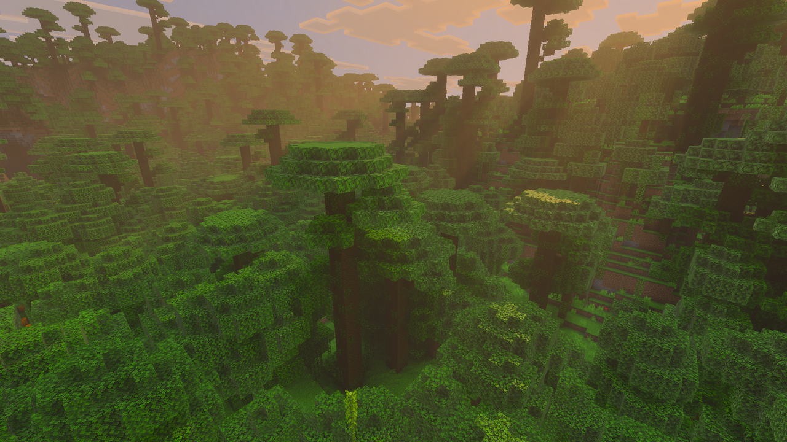
O chão é predominantemente composto por blocos de grama de tonalidade verde intensa, muitos deles cobertos
por grama alta e samambaias. Entre as árvores também
aparecem pequenos arbustos formados por folhas de
carvalho e um único tronco, aumentando ainda mais a densidade da vegetação.
Diferentemente de biomas mais abertos, como planícies ou desertos, a visibilidade horizontal dentro de uma
selva costuma ser bastante limitada. Troncos, folhas e
trepadeiras frequentemente bloqueiam a visão do
jogador
Árvores e vegetação


As árvores da selva estão entre as maiores existentes naturalmente no Minecraft. Algumas podem ultrapassar 30
blocos de altura, formando verdadeiras torres
naturais acima da floresta. Além das grandes árvores, o
bioma também apresenta árvores menores da selva e carvalhos espalhados pela região.
Muitos troncos e blocos de folhas são cobertos naturalmente por trepadeiras. Elas podem ser utilizadas pelo
jogador para subir pelas árvores, alcançar regiões
mais elevadas ou atravessar determinadas partes da
floresta sem precisar construir escadas. Entretanto, a enorme quantidade de folhas e troncos também
dificulta bastante a movimentação pelo nível do solo.
Em determinadas regiões também podem surgir brotos isolados de bambu, especialmente próximos de áreas que fazem transição para Selvas de Bambu.
Recursos naturais
Apesar das dificuldades de exploração, a Selva é extremamente rica em recursos naturais. A grande quantidade
de árvores fornece praticamente uma fonte inesgotável
de madeira, tornando o bioma excelente para
construção
e produção de ferramentas. As árvores da selva também podem apresentar sementes de cacau crescendo
diretamente em seus troncos. Elas podem ser coletadas e cultivadas novamente em madeira da selva, permitindo
a criação de plantações próximas à base.
Outro recurso importante são as melancias. Elas aparecem naturalmente em grupos espalhados pelo chão da
floresta e são uma fonte de alimento fácil de encontrar
durante a exploração. As manchas naturais de
melancia são uma característica especialmente associada às selvas e aparecem com
relativa frequência.
Dependendo da região, também é possível encontrar bambu crescendo naturalmente.
Alimentos disponíveis
 |
 |
|---|---|
| Recupera: 2 | Recupera: — |
| Raridade: Comum | Raridade: Comum |
Uma das grandes vantagens de explorar uma Selva é a relativa facilidade de encontrar alimentos sem precisar
depender exclusivamente da caça. As melancias espalhadas
pelo chão podem ser utilizadas como uma fonte
imediata de alimento durante longas explorações.
Embora cada fatia de melancia recupere uma quantidade relativamente pequena de fome, sua abundância compensa
essa limitação. O jogador também pode carregar
algumas sementes ou blocos de melancia para criar uma
plantação posteriormente. As sementes de cacau não servem diretamente como alimento, mas podem
ser
utilizadas na fabricação de biscoitos quando combinadas com trigo.
Dessa forma, estabelecer uma base próxima de uma Selva pode fornecer acesso fácil a diferentes recursos alimentares renováveis.
Fauna
A Selva abriga algumas criaturas que não podem ser encontradas naturalmente na maioria dos outros biomas.
Entre os animais característicos estão:
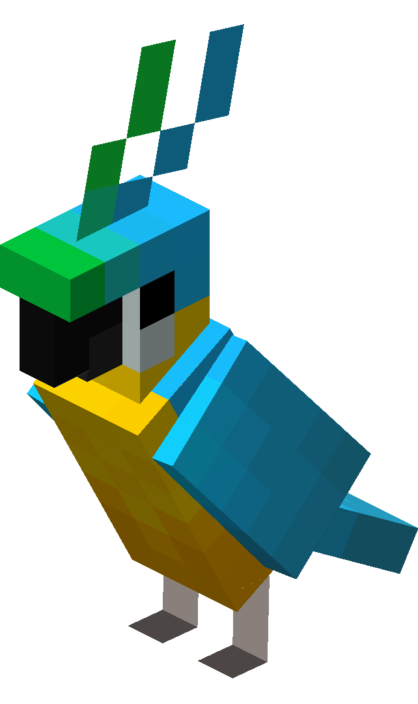 |
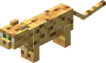 |
 |
|---|---|---|
|
|
|
|
Pontos de Vida: 6 ( ) ) |
Pontos de Vida: 10 () |
Pontos de Vida: 20 () |
| Comportamento: Passivo | Comportamento: Passivo | Comportamento: Neutro |
Outros animais comuns:
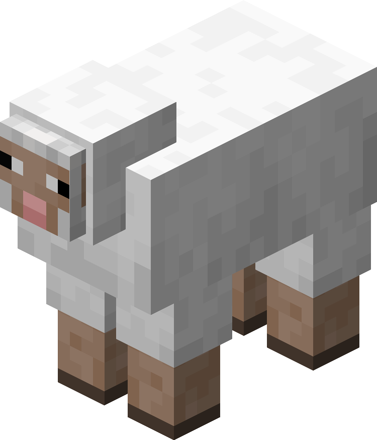 |
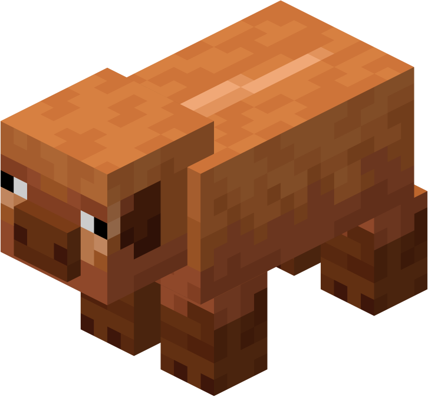 |
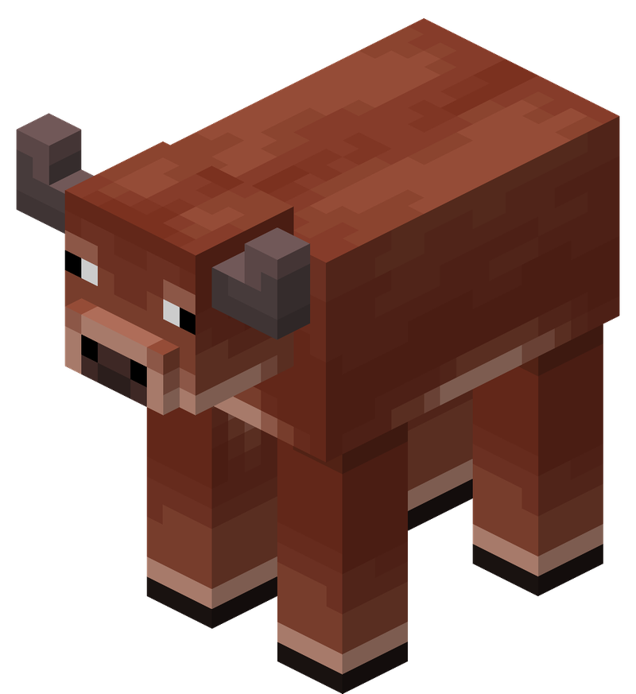 |
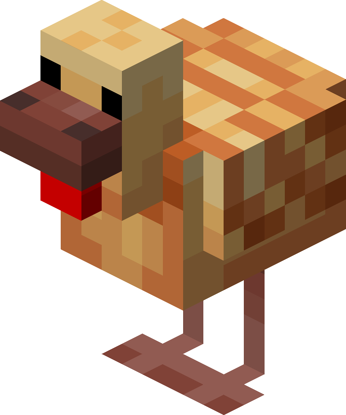 |
|---|---|---|---|
|
|
|
|
|
| Pontos de Vida: 8 () |
Pontos de Vida: 10 () |
Pontos de Vida: 10 () |
Pontos de Vida: 4 () |
| Comportamento: Passivo | Comportamento: Passivo | Comportamento: Passivo | Comportamento: Passivo |
Perigos durante a noite
Durante o dia, a Selva pode parecer relativamente segura, mas sua vegetação densa cria diversas áreas
escuras. À noite, criaturas hostis podem surgir entre as árvores e
permanecer parcialmente escondidas
pelas folhas e arbustos. Creepers representam um perigo especial nesse ambiente, pois sua coloração pode se
misturar parcialmente
com a vegetação
Ao construir uma base na Selva, iluminar cuidadosamente o terreno ao redor é extremamente importante.
Eliminar arbustos próximos da construção também pode melhorar
a visibilidade e impedir que criaturas se
aproximem sem serem percebidas.
Lista de monstros comuns:
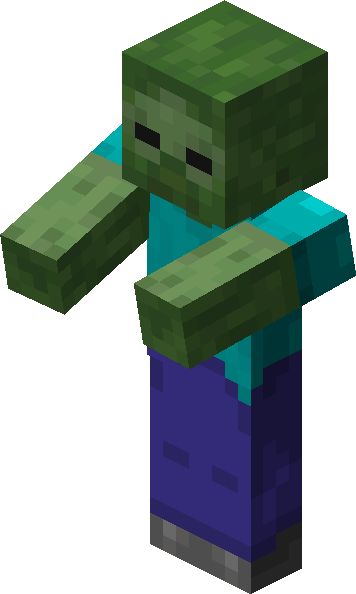 |
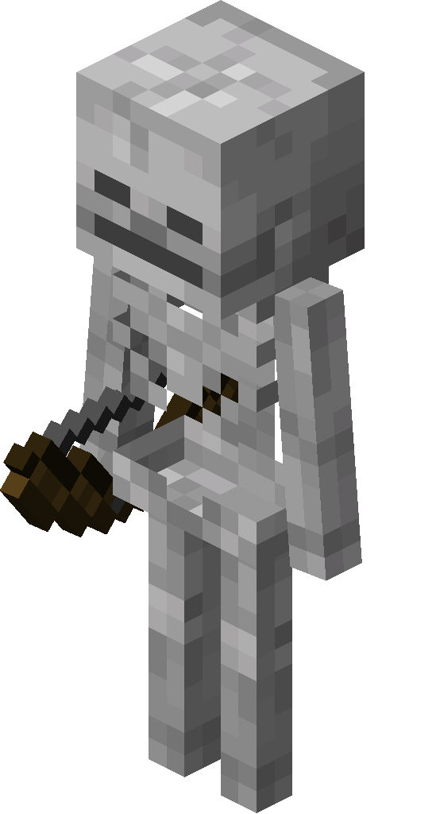 |
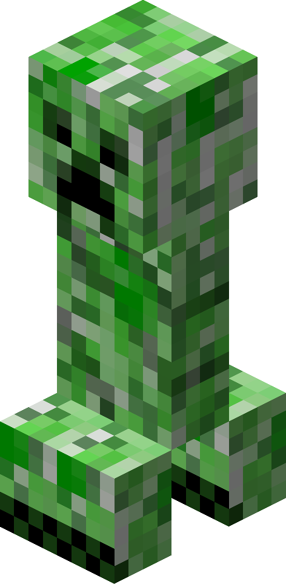 |
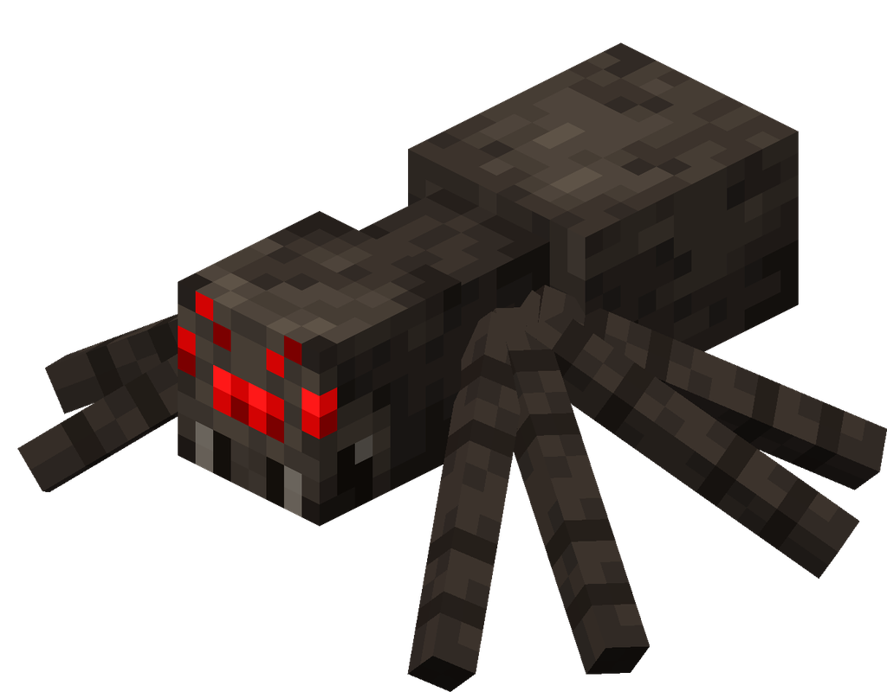 |
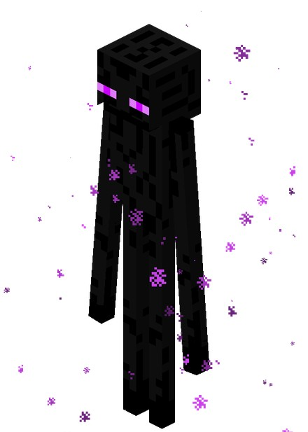 |
|---|---|---|---|---|
|
|
|
|
|
|
| Pontos de Vida: 20 () |
Pontos de Vida: 20 () |
Pontos de Vida: 20 () |
Pontos de Vida: 16 () |
Pontos de Vida: 40 () |
| Categoria: Morto-vivo | Categoria: Morto-vivo | Categoria: ??? | Categoria: Artrópode | Categoria: ??? |
Estruturas da Selva
Trilha em Ruínas
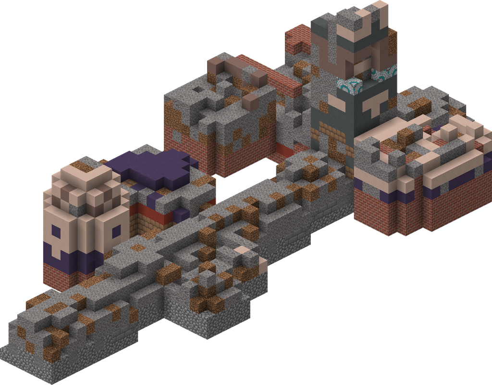
Trilhas em Ruínas também podem aparecer em regiões de Selva. Grande parte dessas estruturas permanece
enterrada, fazendo com que apenas pequenos blocos fiquem visíveis
na superfície. Por esse motivo,
jogadores
que estiverem caminhando rapidamente pela floresta podem facilmente passar por uma delas sem perceber.
Esses locais são particularmente relevantes para jogadores interessados em arqueologia e exploração.
Templo da Selva

Uma das estruturas mais importantes encontradas nesse bioma é a , também conhecida Templo da Selva
informalmente como Pirâmide da Selva. Essas estruturas são construídas
principalmente utilizando
pedregulho e
pedregulho musgoso.
Por possuírem tonalidades semelhantes às da floresta e frequentemente ficarem parcialmente cobertas por
árvores e trepadeiras, podem ser extremamente difíceis de identificar à
distância. Explorar regiões
mais
elevadas ou observar a floresta a partir das copas das árvores aumenta as chances de encontrá-las.
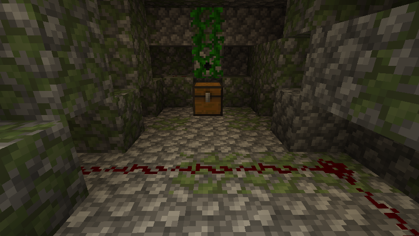
Dentro dessas estruturas existem mecanismos, armadilhas e baús contendo possíveis recompensas. O jogador deve
explorar com atenção, especialmente devido às armadilhas
conectadas a fios e mecanismos de redstone.
Trilha Sonora
Algumas das trilhas sonoras reproduzidas ao explorar uma Selva:
"Bromeliad"
"Left to Bloom"
Dificuldade de sobrevivência
- (Moderada a Difícil)- (Alta)
- (Muito Alta)
- (Baixa)
- (Moderado)
Resumo
A Selva recompensa jogadores que aprendem a utilizar o próprio ambiente a seu favor. Suas árvores gigantes
podem servir como torres de observação, os rios funcionam como
rotas naturais de transporte e sua
abundante
vegetação fornece praticamente tudo que é necessário para estabelecer uma base.
Entretanto, entrar profundamente na floresta sem estabelecer pontos de referência pode transformar
rapidamente uma exploração simples em uma longa tentativa de encontrar
o caminho de volta.